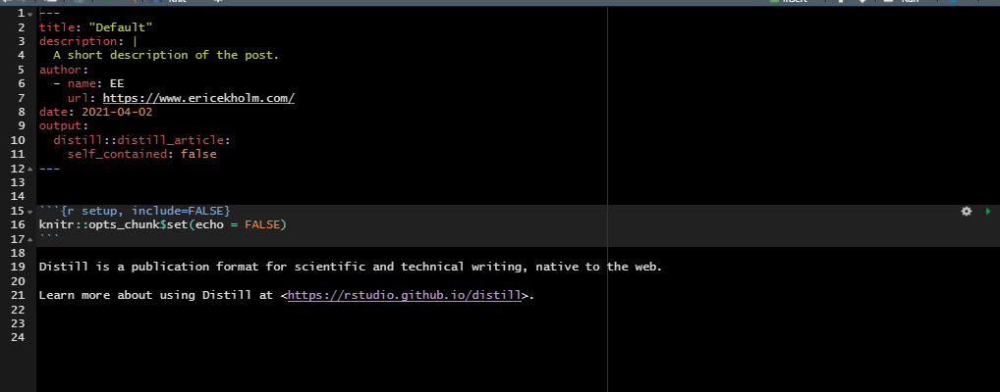
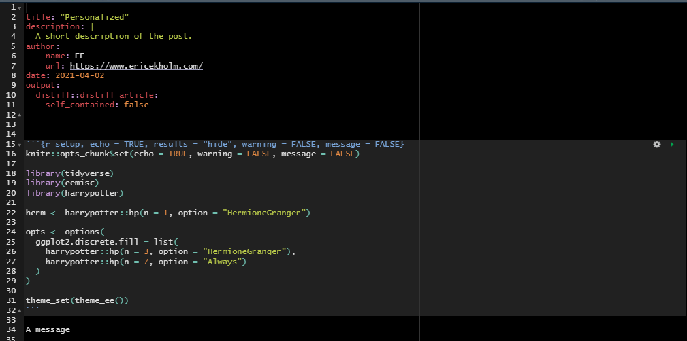

create_ee_post <- function(..., open = TRUE) {
tmp <- distill::create_post(..., edit = FALSE)
yaml <- readLines(tmp, n = 12)
con <- file(tmp, open = "w")
on.exit(close(con), add = TRUE)
body <-
'
#```{r setup, echo = TRUE, results = "hide", warning = FALSE, message = FALSE}
knitr::opts_chunk$set(echo = TRUE, warning = FALSE, message = FALSE)
library(tidyverse)
library(eemisc)
library(harrypotter)
herm <- harrypotter::hp(n = 1, option = "HermioneGranger")
opts <- options(
ggplot2.discrete.fill = list(
harrypotter::hp(n = 3, option = "HermioneGranger"),
harrypotter::hp(n = 7, option = "Always")
)
)
theme_set(theme_ee())
#```
A message
'
xfun::write_utf8(yaml, con)
xfun::write_utf8(body, con)
if (open == TRUE) usethis::edit_file(tmp)
}I think pretty much everyone will agree that {distill} is great. I use it for my personal website. I use it to write reports for work. There are probably other things I could/should be using it for, too. It makes publishing cleanly-formatted articles super easy, and as someone with minimal background in html/css, it’s been invaluable to me.
One thing that’s been on my to-do list re: {distill}, though, has been to look into how to modify the Rmd template. What I mean by this is not changing the styling (although I’ve played around with that a little bit, too), but rather how to modify to the template to automatically include the packages I use in pretty much every blog post as well as to set knit options. Obviously, it’s not a huge deal to add this stuff in every time I make a new post – it’s only a few lines of code – but it is a little bit tedious.
Making an Rmd template is fairly straightforward, and the {rmarkdown} bookdown site has some great resources. But the process for creating an Rmd template while simultaneously taking advantage of the features of distill::create_post() felt less obvious to me. I had a little bit of time a couple of days ago to noodle about it, so I wanted to share what I came up with here.
Disclaimer: This solution feels a bit hacky, so I’d love feedback from anyone reading on how to improve this. Regardless, let’s get into it.
The Default Distill Template
Running distill::create_post() while you have your website project open will create a new subdirectory in your _posts directory (assuming you’ve stuck with the defaults). The name of this subdirectory will contain the date and a slug related to the title of your post (again, assuming you’ve stuck with the defaults). It will also create an Rmd file in the newly-created subdirectory that looks something like this:

Again, this is great, but what if we want the template to come with, say, library(tidyverse) already included? Or what if we wanted to specify some knit options? That is, what if we want our template to look more like this:

A Personalized Distill Template
The function below can do just that. I’ll post it in its entirety, then walk through what it does and how you can modify this if you want.
Here’s the function, which I’m calling create_ee_post(), but you might want to use your own initials:
I’ve included the function in my personal R package if you want to take a peek at it there. One note re: the above is that you’ll want to remove the un-comment the ``` within the body. I’ve commented those out here because I’m embedding them in a code chunk.
Right, so, big picture, the above function just wraps distill::create_post() so we still get all of the goodies of that function, then modifies the Rmd file produced by distill::create_post() after it’s already created. Let’s take a look at pieces more closely.
Step by Step
tmp <- distill::create_post(..., edit = FALSE)This runs distill::create_post() and allows you to pass whatever arguments you typically would (e.g. setting the title) to that function. I’m setting edit = FALSE here because we don’t want to open the file that this function creates since we’re going to modify it after the fact (n.b. that we’ll add in a line later that will open the modified file, if we want). This will also store the path of the file that’s created to a variable called tmp, which is useful later.
yaml <- readLines(tmp, n = 12)This will read the first 12 lines of the Rmd file we just created and store them in the yaml variable. If you use the defaults of distill::create_post(), then your YAML header should be 12 lines, although I suppose your mileage could vary. It’s probably possible, too, to use some regex to read in lines between the dashes setting off the YAML header, but I didn’t play around with that.
con <- file(tmp, open = "w")
on.exit(close(con), add = TRUE)These lines will open a connection to the tmp file we specified earlier and then, once the function exits, close this connection. I basically just copied this from the source code of distill::create_post().
body <-
'
#```{r setup, echo = TRUE, results = "hide", warning = FALSE, message = FALSE}
knitr::opts_chunk$set(echo = TRUE, warning = FALSE, message = FALSE)
library(tidyverse)
library(eemisc)
library(harrypotter)
herm <- harrypotter::hp(n = 1, option = "HermioneGranger")
opts <- options(
ggplot2.discrete.fill = list(
harrypotter::hp(n = 3, option = "HermioneGranger"),
harrypotter::hp(n = 7, option = "Always")
)
)
theme_set(theme_ee())
#```
A message
'Here’s the heart of this function. In this chunk, we’re specifying what we want the body (as opposed to the YAML header) of the Rmd file to look like, and everything gets passed in as a string. So, here, I’m doing a few things:
- Setting the options for the “setup” chunk,
- Setting the global chunk options for this file,
- Loading some libraries I commonly use (n.b. that
{harrypotter}provides HP-themed color palettes and is my go-to option for colors), - Setting ggplot fill/color options (including just grabbing the hex code for the dark red that’s the first color in the “Hermione Granger” palette)
- And finally setting the
{ggplot2}theme to be the custom theme I’ve created in my{eemisc}package.
I’ve also added a message (“A message”) to the file just for funsies.
If you’re interested in adapting this function, this is the code you’ll want to change to specify whatever options you prefer in your Rmd files/blog posts. You’ll also need to un-comment the ```s.
xfun::write_utf8(yaml, con)
xfun::write_utf8(body, con)These lines will write the contents of the yaml variable (which we just pulled from the distill::create_post() default – we didn’t change anything here) and the body variable (which we just specified above) to con, which is the file we want to edit.
if (open == TRUE) usethis::edit_file(tmp)Finally, this will open the file we just created in RStudio.
So that’s that. Again, this may not be the best way to do this, but it does seem to work. I’d love to hear if others have other (and better) ways of accomplishing this.
Reuse
Citation
BibTeX citation:
@online{ekholm2021,
author = {Ekholm, Eric},
title = {Personalizing the {Distill} {Template}},
date = {2021-04-05},
url = {https://www.ericekholm.com/posts/personalizing-the-distill-template},
langid = {en}
}
For attribution, please cite this work as:
Ekholm, Eric. 2021. “Personalizing the Distill Template.”
April 5, 2021. https://www.ericekholm.com/posts/personalizing-the-distill-template.